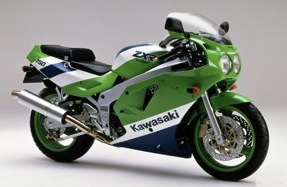
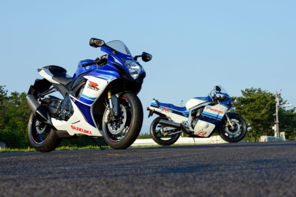
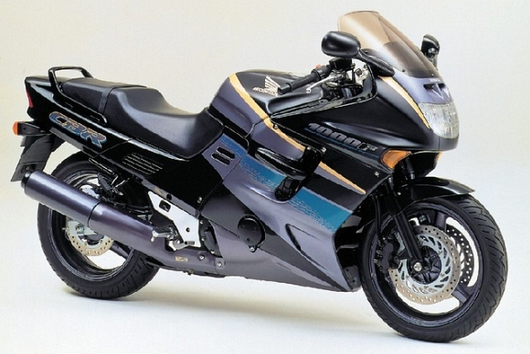
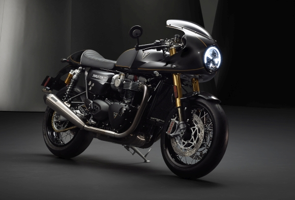
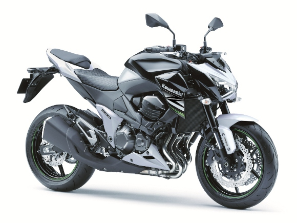
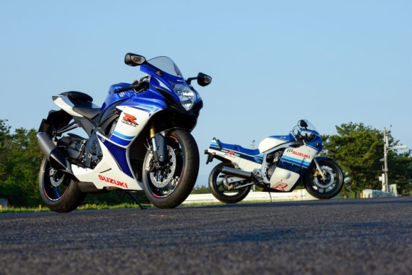
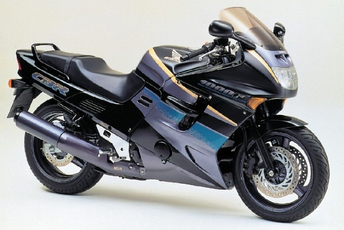
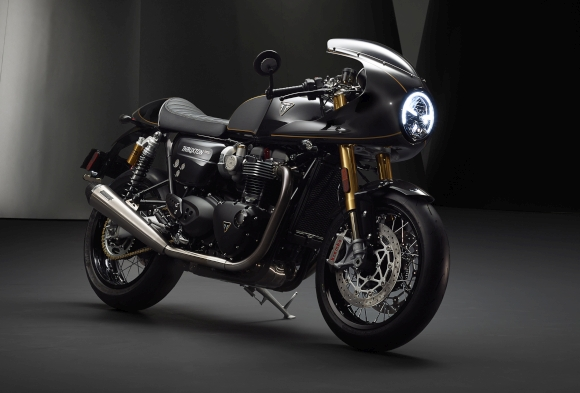
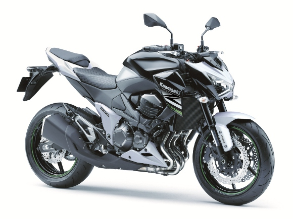

Vijesti





Kawasaki ZXR 750
Kawasakijev legendarni superbike ZXR 750 ove godine slavi trideseti rođendan, čime i službeno postaje 'oldtimer. Više ...

Nakon Hayabuse, odlazi još jedna Suzukijeva legenda
Jedan od najkarizmatičnijih sportskih motocikala svih vremena – Suzuki GSX-R 750 – uklonjen je iz Suzukijeve službene ponude. Više ...

Rabljeni toureri do 3000€
Bavimo će se pomalo zaboravljenim, starijim motociklima koje u inozemstvu možete dobiti doslovce za šaku eura. Više ...

Riječ je o ekskluzivnim izdanjima Triumphovih motocikala
Triumph je proširio svoju paletu proizvoda posebnom serijom FCO (Factory Custom Offer). Više ...

Dizajneri iz Akashija ovog su puta imali odriješene ruke.
Nasljednik megapopularnog modela Z 750 stigao je na 40. obljetnicu Z-serije, i to donoseći znatno agresivniji dizajn, unaprijeđenu ciklistiku te potentniji motor. Više ...